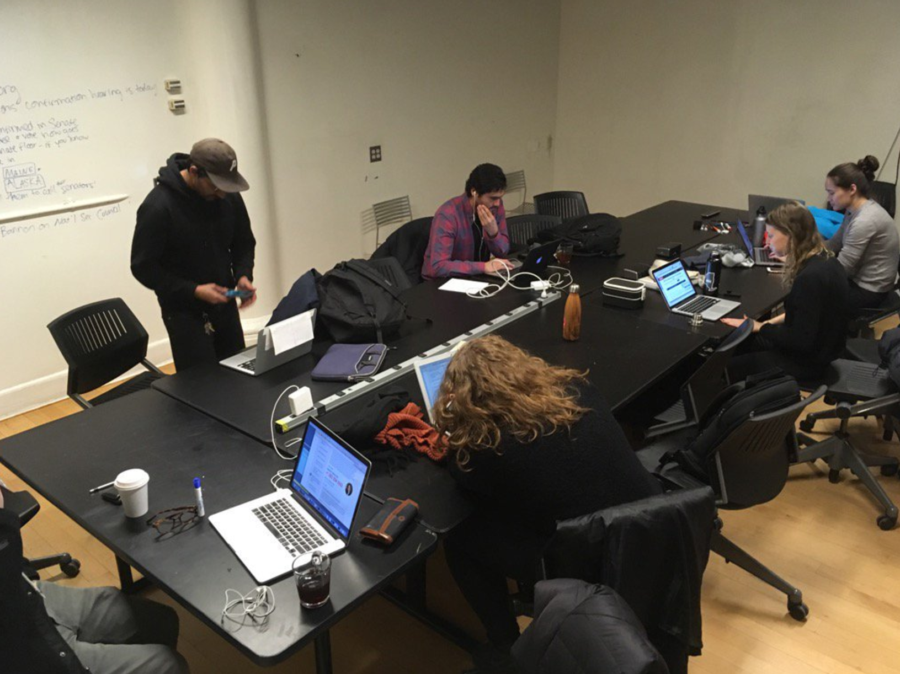

fred moten and stefano harney's book, the undercommons
judith butler <3
teaching IRL workshops
(intro to p5.js, intro to packet sniffing, how the web works)
what does 'open source' even mean?
"The idea is that if you let go and you share your corporate secrets, there are other business models and ways of making money." -Eitan
"a lot of times with open source projects, people take the code, modify it, and then feel inspired to contribute that back" -Lauren
"you’re spending your free time with these people you maybe have never met, never really seen, working toward some common goal, some betterment of society, putting your heart and soul into it, and talking to them all the time, but you don’t really know each other." -Vesha
paid internships in open source for people who are underrepresented in open source
paid internships in open source
how can we use our access to space and tools to support political work that's already happening?
deport trump tuesdays
can we evaluate whether that's true based on who works in them, who gets listened to, who is supported, how the physical space is designed—and push for concrete changes when it's not?
gender neutral bathrooms
in hiring and admissions, prioritizing people of color, queer people, disabled people, & other underrepresented groups
make art
do reporting